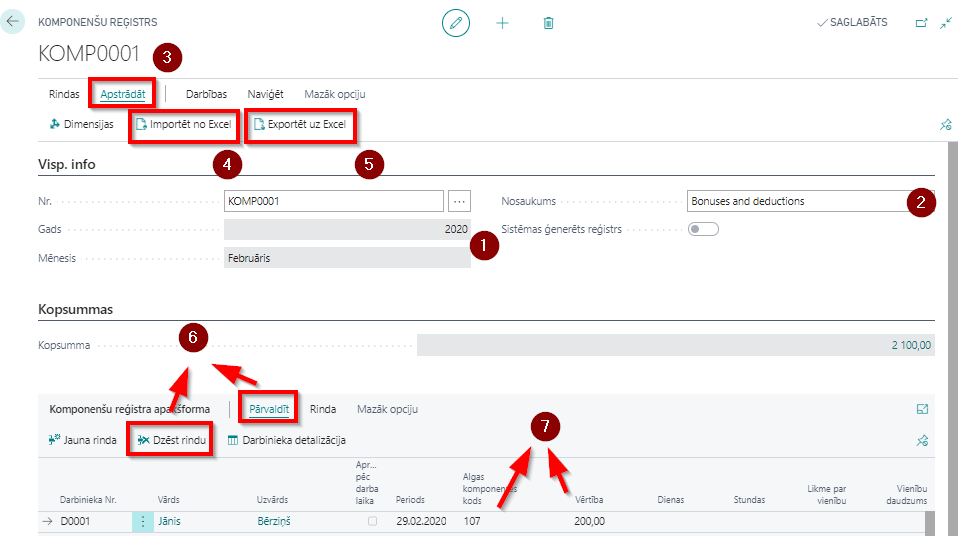

Piemaksas un atvilkumi
Komponenšu reģistrs
Komponenšu reģistru (KR) paredzēts aizpildīt gadījumos, ja darbiniekam ir ienākumi vai atvilkumi, kas katru mēnesi atšķiras – tiek noteiktas ārpus programmas. Aizpildot KR, visas minētās algas komponentes tiks iekļautas tajā mēneša algas aprēķinā, kurš norādīts reģistra virsrakstā.
Jauna reģistra izveide
Jaunu reģistru veido sākuma lapā vai sistēmas meklētājā izvēloties Komponenšu reģistri un nospiežot pogu Jauns.
Numurs reģistram tiks piešķirts automātiski. Tālāk jāizvēlas Gads un Mēnesis, par kuru tiks ievadītas piemaksas un atvilkumi (atverot jaunu sarakstu, kā noklusētais automātiski tiks ievadīts tekošais gads un mēnesis) ( ).
Ieteicams brīvā formā aizpildīt arī lauku Apraksts, izvēloties apzīmējumu, kuru pēc tam viegli atšifrēt un pēc kura viegli atrast nepieciešamo sarakstu, piem., ievadot nodaļas nosaukumu, vai komponentes veida nosaukumu (piem., ceturkšņa prēmijas), vai darbinieku grupas aprakstu (piem., līgumstrādnieki), u.tml (
).
Ieteicams brīvā formā aizpildīt arī lauku Apraksts, izvēloties apzīmējumu, kuru pēc tam viegli atšifrēt un pēc kura viegli atrast nepieciešamo sarakstu, piem., ievadot nodaļas nosaukumu, vai komponentes veida nosaukumu (piem., ceturkšņa prēmijas), vai darbinieku grupas aprakstu (piem., līgumstrādnieki), u.tml ( ).
).
Darbinieku sarakstu KR-ā iespējams sastādīt vairākos variantos – gan automātiski ģenerējot ar filtriem atlasot darbiniekus un norādot konkrētu algas komponentes kodu, gan atlasot darbiniekus pa vienam. Mēs iesakām datus sagatavot Excel programmā, izmantojot eksportēšanas un importēšanas funkciju rīkjoslā klikšķinot uz Apstrādāt ( ) - Importēt no Excel (
) - Importēt no Excel ( ) vai Exportēt uz Excel ().
) vai Exportēt uz Excel ().
Nepieciešamības gadījumā saģenerētās vai importētās rindas ir manuāli koriģējamas, izdzēšot liekos darbiniekus ( ) vai nomainot Komponentes kodu (
) vai nomainot Komponentes kodu ( ) un/vai Vērtību (). Periods ielasās automātiski - tāds pats, kāds norādīts kartiņas galvenē. Ja komponente attiecas uz citu Periodu (piemēram, ienākumi tiek precizēti), jānomaina vērtība uz nepieciešamo.
) un/vai Vērtību (). Periods ielasās automātiski - tāds pats, kāds norādīts kartiņas galvenē. Ja komponente attiecas uz citu Periodu (piemēram, ienākumi tiek precizēti), jānomaina vērtība uz nepieciešamo.

Darbinieka kartiņa
Piemaksas un atvilkumus, kuri ilgu laika periodu tiek iekļauti ikmēneša algas aprēķinā kā konstantas summas, ieteicams ievadīt Darbinieka kartiņā. To izdarot, darbiniekam katru mēnesi algu aprēķinā automātiski tiks pielikta attiecīgā piemaksa vai/un noņemts attiecīgais atvilkums.
Var ērti ievadīt darbinieka kartiņas Algas komponenšu rindās.